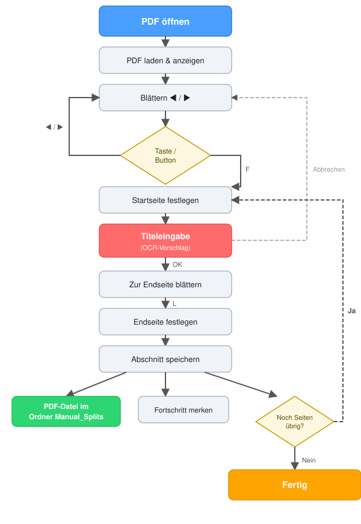

PDFTrenner Swift ist eine native macOS-Anwendung, geschrieben in SwiftUI mit PDFKit-Anbindung. Die Anwendung wird als Swift-Package mit einem einzelnen ausführbaren Target gebaut.
PDFTrennerSwift/
├── Package.swift # Swift-Package-Definition
├── build_dmg.sh # Build-Skript (Universal Binary + DMG)
└── PDFTrennerSwift/
├── PDFTrennerApp.swift # @main App-Einstieg, AppDelegate
├── ContentView.swift # UI + ViewModel + TitlePanelController
├── OCRHelper.swift # Vision-basierte OCR-Titelerkennung
├── PDFDocumentHelper.swift # PDF-Seitenextraktion
├── StateHelper.swift # Persistenz des Bearbeitungsstatus
└── Assets.xcassets/ # App-Icon (macOS-Stil, abgerundet)
@main struct PDFTrennerApp: AppapplicationShouldTerminateAfterLastWindowClosed → true, damit die App beim Schließen des Fensters beendet wirdWindowGroup mit ContentView, Mindestgröße 600×700Hauptdatei, enthält drei Komponenten:
ObservableObject)Zentrale Zustandsverwaltung:
| Eigenschaft | Typ | Beschreibung |
|---|---|---|
document |
PDFDocument? |
Geladenes PDF |
currentPage |
Int |
Aktuelle Seitennummer (0-basiert) |
startPage |
Int |
Markierte Startseite |
endPage |
Int |
Markierte Endseite |
statusText |
String |
Statuszeilen-Anzeige |
isLoading |
Bool |
Splash-Screen aktiv |
showSaveDialog |
Bool |
Titeleingabe-Panel sichtbar |
detectedTitle |
String |
OCR-Ergebnis |
currentTitle |
String |
Aktueller/durch den Benutzer bestätigter Titel |
errorMessage |
String? |
Fehlertext |
pdfPath |
String? |
Pfad der geladenen PDF |
Workflow-Methoden:
| Methode | Beschreibung |
|---|---|
onAppear() |
Argumentauswertung oder Dateiauswahl |
openFileChooser() |
NSOpenPanel für PDF-Dateien |
loadPDF(at:) |
PDF laden, State wiederherstellen |
setFirst() |
Startseite = aktuelle Seite, OCR starten, Titeleingabe öffnen |
setLast() |
Endseite = aktuelle Seite, saveSplit() aufrufen |
saveSplit() |
Seiten extrahieren, speichern, nächste Startseite |
runOCR() |
Asynchrone OCR im Hintergrund-Thread |
confirmTitle() / cancelTitle() |
Titeleingabe bestätigen/abbrechen |
Key-Monitor: Lokaler NSEvent.addLocalMonitorForEvents(.keyDown) fängt Pfeiltasten sowie F und L ab. Während die Titeleingabe aktiv ist, werden Tastenkürzel blockiert.
NSObject, NSTextFieldDelegate)Erbt von NSObject, da @objc in Swift-Structs nicht möglich ist.
NSPanel (.utilityWindow, .floating) direkt rechts neben dem HauptfenstermainFrame.origin.x + mainFrame.width + 6 (6px Lücke)NSTextField mit Platzhalter "Songtitel", Abbrechen/OK-ButtonsupdateTextField(_:) ermöglicht asynchrates Update des OCR-Ergebnisses ins TextfeldView)$showSaveDialog (.onReceive) → Panel öffnen/schließen$detectedTitle → Textfeld aktualisieren.alert(isPresented:)Native OCR-Implementierung mit dem Vision-Framework:
enum OCRHelper {
static func recognizeTitle(from document: PDFDocument, pageIndex: Int) -> String
}
Ablauf:
1. Oberer 10%-Streifen der Seite croppen (CGRect mit 10% der Seitenhöhe)
2. Gecroppptes PDF-Seiten-Bild mit CGContext in 2x-Auflösung rendern
3. VNRecognizeTextRequest mit .accurate-Erkennung und Sprachen ["de", "en"]
4. Ergebnis: Zusammenhängender Text, bereinigt um überflüssige Leerzeichen
Unterschied zur JavaFX-Variante: Kein externer Tesseract-Prozess, kein Pipe/Process-Aufruf, keine temporäre PNG-Datei. Vision ist Teil des Betriebssystems.
enum PDFDocumentHelper {
static func extractPages(from document: PDFDocument, start: Int, end: Int) -> PDFDocument?
}
Erstellt ein neues PDFDocument und fügt die Seiten start...end (inklusive) ein. Rückgabe: neues Dokument oder nil bei Fehler.
enum StateHelper {
static func loadState(for pdfPath: String) -> Int
static func saveState(startPage: Int, for pdfPath: String)
}
<Dateiname>.pdf.pdftrenner.state im gleichen Verzeichnis wie die PDF#PDFTrenner State) und startPage=<N>-1 wenn keine State-Datei existiert// swift-tools-version: 5.9
platforms: [.macOS(.v12)]
targets: [.executableTarget(name: "PDFTrennerSwift", path: "PDFTrennerSwift",
resources: [.process("Assets.xcassets")])]
Abhängigkeiten: Keine externen Packages. Nur Framework-Abhängigkeiten:
- SwiftUI
- PDFKit
- Vision
- AppKit
Build-Pipeline für die Distribution:
swift build -c release --arch arm64 und --arch x86_64lipo -create mergt ARM + IntelPDFTrenner.app/Contents/{MacOS,Resources} erstellen, Info.plist schreibensips skaliert, iconutil erzeugt .icnshdiutil create mit UDZO-KompressionInfo.plist:
- CFBundleIdentifier: de.posy.pdftrenner.swift
- LSMinimumSystemVersion: 12.0
- CFBundleIconFile: AppIcon

| Fehler | Auslöser | Anzeige |
|---|---|---|
| Datei nicht gefunden | Ungültiger Pfad | Alert + Fehler-View |
| PDF Ladefehler | Korrupte Datei | Alert + Fehler-View |
| Keine Datei ausgewählt | Abbruch im Dialog | Fehler-View mit "Datei auswählen"-Button |
| Endseite < Startseite | L vor F |
Alert-Dialog |
| Speichern fehlgeschlagen | PDFDocumentHelper.extractPages → nil |
Alert-Dialog |
| OCR fehlgeschlagen | Vision-Request-Fehler | Leeres Textfeld (kein Absturz) |
Alle Fehler werden über @Published var showError: Bool und .alert(isPresented:) angezeigt. Im Splash-Modus wird die Fehlermeldung direkt im Splash-Screen gezeigt.
| Aspekt | Detail |
|---|---|
| Mindestsystem | macOS 12 Monterey |
| Architektur | Universal Binary (arm64 + x86_64) |
| Titeleingabe | NSPanel mit .utilityWindow + .floating, positioniert rechts neben dem Hauptfenster |
| Dateiauswahl | NSOpenPanel mit PDF-Filter |
| Tastaturkürzel | NSEvent.addLocalMonitorForEvents(.keyDown) — F, L, Pfeiltasten |
| Fenster Ende | applicationShouldTerminateAfterLastWindowClosed → true |
| Aspekt | Detail |
|---|---|
| Mindestsystem | iOS 16 |
| Zielgeräte | iPhone + iPad |
| Titeleingabe | SwiftUI .sheet mit .presentationDetents([.medium]) |
| Dateiauswahl | UIDocumentPickerViewController mit PDF-UTI |
| OCR | Gleiches Vision-Framework |
| Tastatur | Keine globalen Shortcuts — Buttons in der UI |
Keine Konfigurationsdatei. Alle Einstellungen sind im Quellcode festgelegt:
| Parameter | Wert | Datei |
|---|---|---|
| OCR-Sprachen | ["de", "en"] |
OCRHelper.swift |
| OCR-Erkennungslevel | .accurate |
OCRHelper.swift |
| OCR-Bereich | Oberer 10% der Seite | OCRHelper.swift |
| Render-Auflösung | 2x Skalierung | OCRHelper.swift |
| State-Datei | <PDF-Name>.pdf.pdftrenner.state |
StateHelper.swift |
| Ausgabeordner | Manual_Splits/ neben der PDF |
ContentView.swift |
| Dateiname-Umlaut-Konvertierung | ä→ae, ö→oe, ü→ue, ß→ss, dann [^a-zA-Z0-9 _-] entfernen |
ContentView.swift |
| Fallback-Dateiname | Song_Seite_N |
ContentView.swift |
| Panel-Lücke | 6px rechts neben Hauptfenster | ContentView.swift (macOS) |
| Framework | Zweck | Plattform |
|---|---|---|
| SwiftUI | UI-Framework | macOS, iOS |
| PDFKit | PDF-Anzeige und -Verarbeitung | macOS, iOS |
| Vision | OCR-Titelerkennung (VNRecognizeTextRequest) |
macOS, iOS |
| AppKit | NSPanel, NSOpenPanel, NSEvent |
Nur macOS |
| UIKit | UIDocumentPickerViewController |
Nur iOS |
Keine externen Swift-Packages. Keine externen Binaries (Tesseract wird nicht verwendet).